▲ 신안 증도 태평염전의 염전 판. 2011년 9월 22일 촬영, 겨울 모습과는 다르다 ⓒ Korea.net / KOCIS · CC BY-SA 2.0 (Wikimedia Commons) · 촬영 2011-09-22
"증도에 염전 보러 가는데, 다리 건너야 하나? 통행료는? 소금박물관은 몇 시까지지?" 이 글은 2026년 10월 21일 기준으로 한국관광공사 정보, 신안군 연륙연도교 현황, 국가유산청 자료를 바탕으로 증도 접근 방법과 소금박물관·짱뚱어다리·태평염생식물원 이용 조건, 겨울에 달라지는 점을 정리했다. 한국관광공사 소금박물관 안내 바로가기
결론부터 말하면 증도는 더 이상 배로만 가는 섬이 아니다. 2010년 증도대교가 놓여 차로 들어갈 수 있다. 다만 증도대교 통행료를 부과한다는 공식 근거도, 무료라는 공식 근거도 이번 조사에서 찾지 못했다. 신안군 연륙연도교 현황과 전라남도도로관리사업소 지방도 교량 현황(2026-10-21 확인)에는 이 다리가 지방도 805호선 교량으로만 올라 있고 요금 정보는 없다. 요금 확인은 신안군 증도 관광 안내에 문의처로 올라 있는 증도면사무소(061-240-4003)나 증도 관광안내소(061-240-8976)에 해야 한다.
💡 먼저 결론
소금박물관은 09:00~18:00(점심시간 12:00~13:00), 연중무휴, 성인 3,000원·초중고 1,500원이다(한국관광공사 정보). 짱뚱어다리는 상시 개방·연중무휴로 안내된다. 태평염전 염전체험은 3월 중순~10월 중순 운영이라 겨울에는 할 수 없다. 증도대교 통행료는 공식 확인하지 못했다.
1. 먼저 바로잡기 — 증도는 배 타고 가는 섬이 아니다
증도는 신안군 북쪽에 있는 섬이지만 지금은 차로 들어간다. 신안군은 2010년 3월 30일 지도읍 탄동리와 증도면을 잇는 증도대교 개통식을 열었다. 당시 보도에 따르면 총길이 1.9km(교량 900m), 너비 14m의 왕복 2차로 아치교이고 사업비는 751억 원이다.
신안군 연륙연도교 현황 자료에는 이 다리의 교량부 900m(주경간 340m, 접속교 560m)와 공사기간 2005년 8월~2010년 7월이 적혀 있다. 개통식 시점과 공사 종료 표기가 다른 이유는 자료에 설명이 없어 확인하지 못했다. 신안군 연륙연도교 현황 바로가기
| 항목 | 확인한 내용 | 근거 |
|---|---|---|
| 위치 | 지도읍 탄동리(사옥도)와 증도를 연결 | 신안군·서울신문 |
| 규모 | 총길이 1.9km(교량 900m), 너비 14m, 왕복 2차로 아치교 | 서울신문(2010-03-31) |
| 개통식 | 2010년 3월 30일 | 서울신문 |
| 도로 구분 | 지방도 805호선, 교량부 900m(주경간 340m·접속교 560m), 도로부 115m, 접속도로 949m(2차로) | 신안군 연륙연도교 현황 |
| 통행료 | 부과·면제 모두 공식 자료에서 확인하지 못함. 전라남도도로관리사업소 지방도 교량 현황에는 지방도 805호선 증도대교(1종, 2010년 준공)로 올라 있으나 요금 항목이 없음 | 신안군·전남도 현황에 요금 항목 없음 |
교량 900m는 서울신문과 신안군 현황이 같고, 신안군 쪽이 주경간 340m와 접속교 560m로 더 잘게 나눠 적는다. 통행료는 두 자료 모두 항목이 없어 확인하지 못했으니 현장 안내를 따르자.
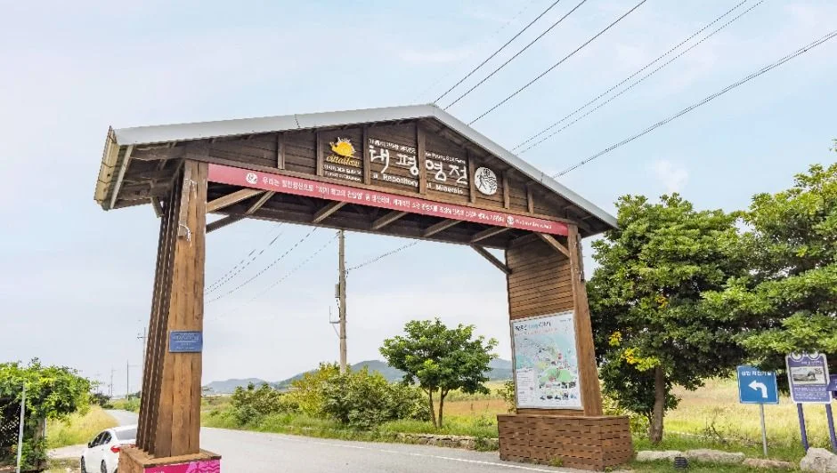
▲ 증도 입구의 목재 아치. 한국관광공사 '증도(신안)' 항목 사진이며 촬영 시기는 자료에 없다. ⓒ 한국관광공사 · 공공누리 제1유형
2. 증도 가는 길 — 육지에서 증도대교까지
증도는 육지에서 무안을 거쳐 신안 지도읍·사옥도를 지나 들어간다. 보도와 여행 안내는 무안군 해제면에서 지도읍 송도, 사옥도를 거쳐 증도대교를 건너는 순서로 소개한다. 고속도로 출구나 도로 번호, 소요 시간은 공식 자료로 확인하지 못해 적지 않는다. 내비게이션에는 목적지 주소를 넣는 편이 안전하다.
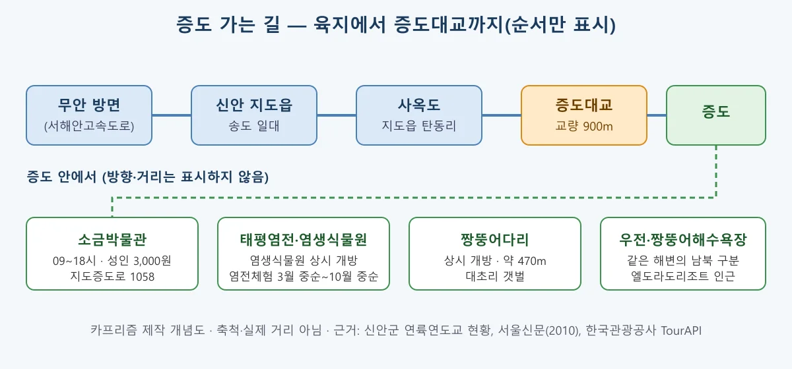
▲ 증도 접근 순서와 주요 장소를 나타낸 개념도. 축척과 실제 거리는 아니다. 카프리즘 제작
| 장소 | 주소 | 문의 |
|---|---|---|
| 소금박물관 | 신안군 증도면 지도증도로 1058 | 061-275-0829 |
| 태평염생식물원 | 신안군 증도면 증동리 | 061-275-7541 |
| 짱뚱어다리 | 신안군 증도면 대초리 | 061-240-8976 |
| 엘도라도리조트 | 신안군 증도면 지도증도로 1766-15 | 062-942-6300 |
| 신안갯벌박물관 | 신안군 증도면 지도증도로 1766-4 | 061-275-8400 |
목포에서 출발한다면 시내 일정은 목포 유달산 기사를 참고하자. 주차는 한국관광공사 정보에서 짱뚱어다리·태평염생식물원이 "가능"으로만 안내되고, 소금박물관은 주차 항목이 따로 없다. 요금과 대수는 확인하지 못했다.
3. 태평염전 — 단일 염전 규모와 문화유산 지위
태평염전은 전증도와 후증도를 둑으로 잇고 그 사이 갯벌에 조성한 국내 최대의 단일 염전이다. 2007년 11월 22일 국가등록문화유산(등록문화재 제360호)으로 등록됐고, 국가유산청 자료의 염전일곽 총면적은 1,089,088㎡이다. 국가유산청 태평염전 안내 바로가기
📌 면적 수치가 서로 다른 이유
여행 매체와 홍보 자료는 태평염전을 "약 140만 평(462만㎡)" 또는 "여의도 2배"로 소개한다. 반면 국가유산청 등록 면적은 약 109만㎡다. 어느 범위를 센 것인지 자료에 설명이 없어 이 글은 공식 등록 면적을 따랐고, 140만 평은 홍보 수치로만 적는다.
아래 사진들은 2011년 9월 22일 촬영분이라 소금을 거두는 시기의 모습이다. 뒤의 겨울 구간에서 설명하는 풍경과는 다르다.

▲ 염전에서 소금을 모으는 작업. 2011년 자료 사진이라 겨울 모습이 아니다. ⓒ Korea.net / KOCIS · CC BY-SA 2.0 (Wikimedia Commons) · 촬영 2011-09-22
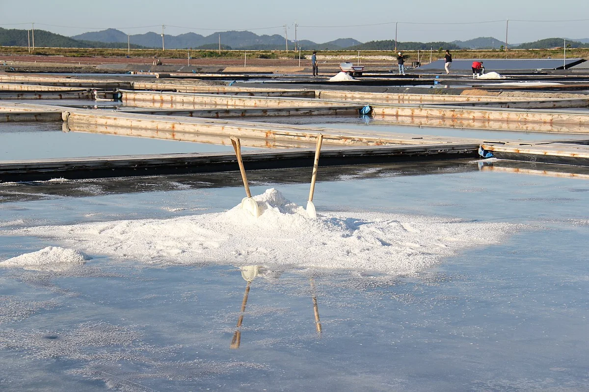
▲ 염전 판 위에 쌓인 소금. ⓒ Korea.net / KOCIS · CC BY-SA 2.0 (Wikimedia Commons) · 촬영 2011-09-22
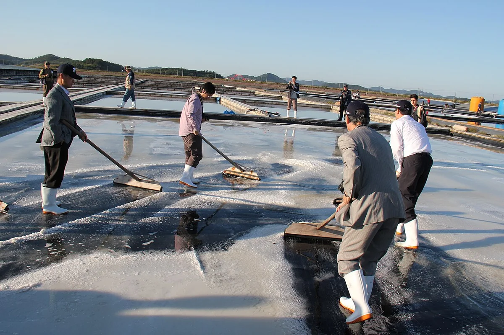
▲ 염전 작업자들이 소금을 모으는 모습. 2011년 자료 사진. ⓒ Korea.net / KOCIS · CC BY-SA 2.0 (Wikimedia Commons) · 촬영 2011-09-22
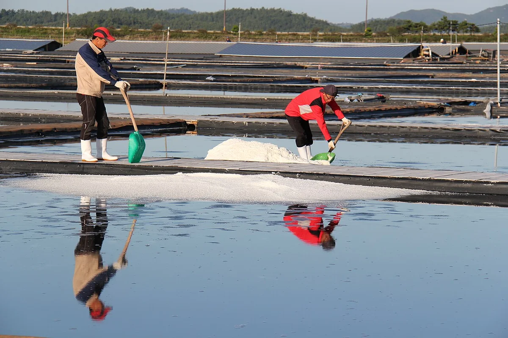
▲ 삽으로 소금을 퍼 올리는 작업. 2011년 자료 사진이라 현재 작업 방식과 다를 수 있다. ⓒ Korea.net / KOCIS · CC BY-SA 2.0 (Wikimedia Commons) · 촬영 2011-09-22
▲ 천일염 알갱이를 가까이서 본 모습. ⓒ Korea.net / KOCIS · CC BY-SA 2.0 (Wikimedia Commons) · 촬영 2011-09-22
4. 소금박물관 — 1948년 석조 소금창고 안으로
소금박물관은 염전이 만들어진 1948년에 지은 석조 소금창고를 고쳐 2007년에 문을 열었다. 한국관광공사는 국내에 남은 유일한 석조 소금창고이자 등록문화유산이라고 소개한다. 전시에는 소금 조각과 소금 관련 패널, 소금으로 만든 스크린에 비추는 염전 영상이 있다.
| 항목 | 내용 |
|---|---|
| 관람시간 | 09:00~18:00 (점심시간 12:00~13:00) |
| 휴관일 | 연중무휴 |
| 입장료 | 성인(20~64세) 3,000원, 초·중·고 1,500원 |
| 무료 대상 | 65세 이상, 장애인, 국가유공자, 미취학 어린이(증빙 필요) |
| 소요시간 | 약 30분 |
| 문의 | 061-275-0829 |
점심시간 12~13시에 관람이 막히는지는 공식 안내에 설명이 없어 확인하지 못했다. 이 시간대에 도착한다면 전화로 먼저 물어보는 편이 안전하다.
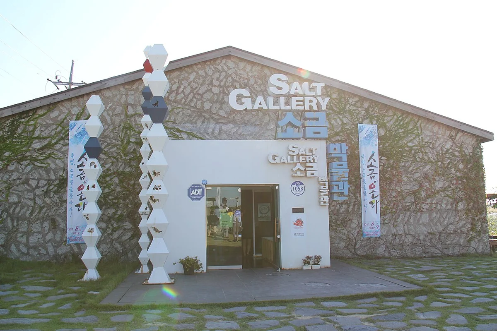
▲ 소금박물관 외관. 석조 건물 앞에 소금 결정 모양 조형물이 서 있다. ⓒ Korea.net / KOCIS · CC BY-SA 2.0 (Wikimedia Commons) · 촬영 2011-09-22
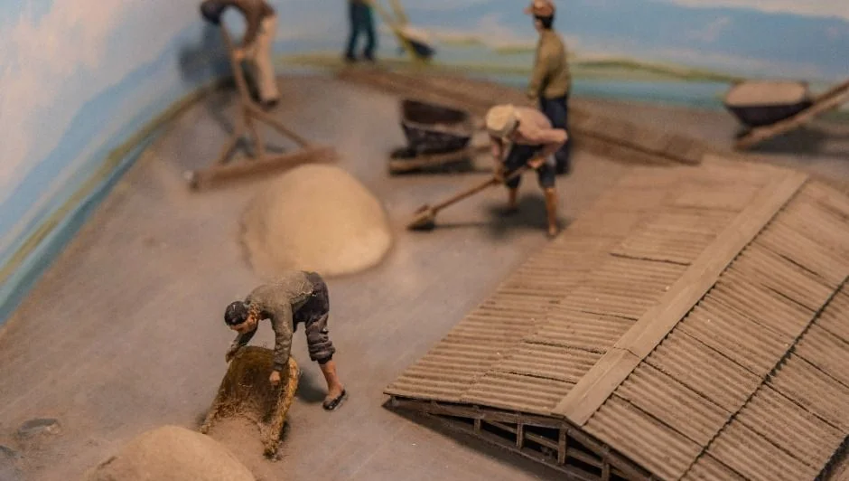
▲ 소금 채취 장면을 재현한 전시. 촬영 시기는 자료에 없다. ⓒ 한국관광공사 · 공공누리 제1유형
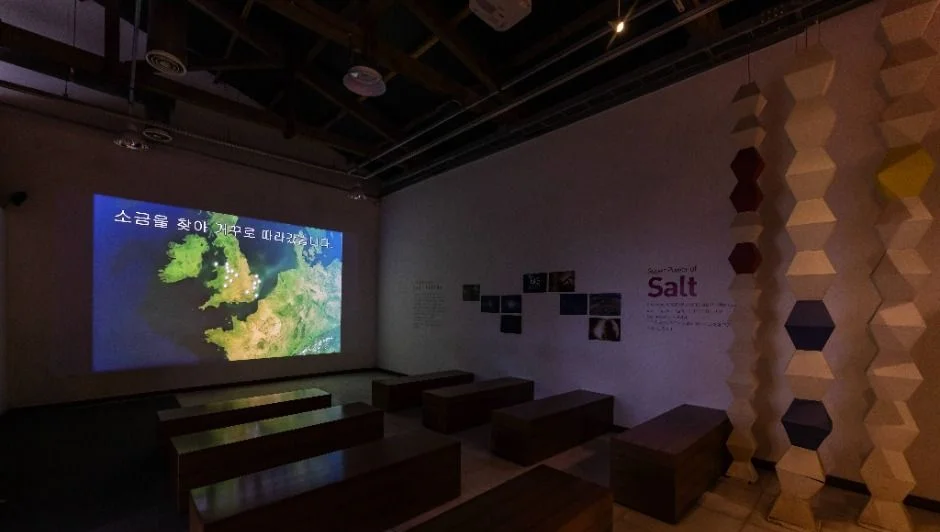
▲ 염전 영상을 상영하는 전시 공간. ⓒ 한국관광공사 · 공공누리 제1유형
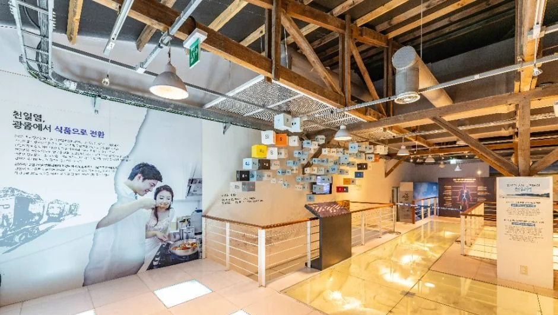
▲ 소금의 활용을 소개하는 전시 공간. ⓒ 한국관광공사 · 공공누리 제1유형
5. 짱뚱어다리 — 갯벌 위 약 470m
짱뚱어다리는 증도 대초리 갯벌 위를 가로지르는 목교다. 한국관광공사와 정책브리핑은 길이 470m로 소개하는데, 다른 수치(472m)를 적은 자료가 있다는 이야기도 있지만 이번 조사에서는 그 출처를 확인하지 못했다. 이 글은 공식 소개를 따라 약 470m라고 쓴다. 다리 아래 갯벌에 짱뚱어가 많아 붙은 이름이라고 설명된다. 한국관광공사 정보상 상시 개방·연중무휴이고 주차는 가능하다(문의 061-240-8976).
물이 빠지면 갯벌이, 물이 차면 바다 위를 걷는 느낌이 난다는 설명이 있지만, 물때에 따른 모습은 날짜마다 다르다. 방문 날 물때표를 보고 가면 갯벌 풍경을 놓치지 않는다.
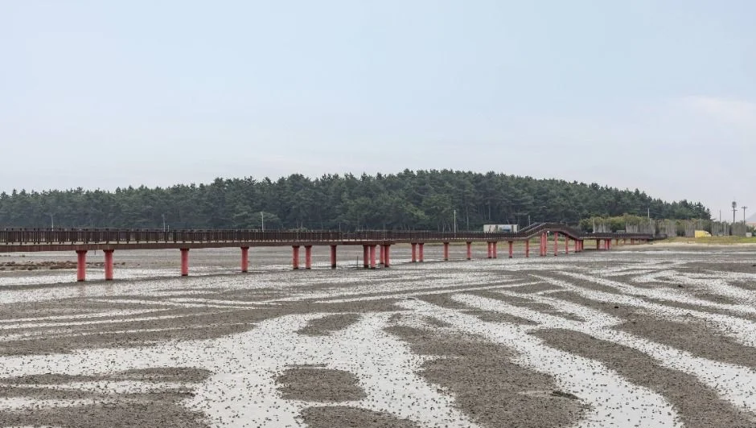
▲ 물이 빠진 갯벌과 멀리 보이는 짱뚱어다리. 촬영 시기는 자료에 없다. ⓒ 한국관광공사 · 공공누리 제1유형
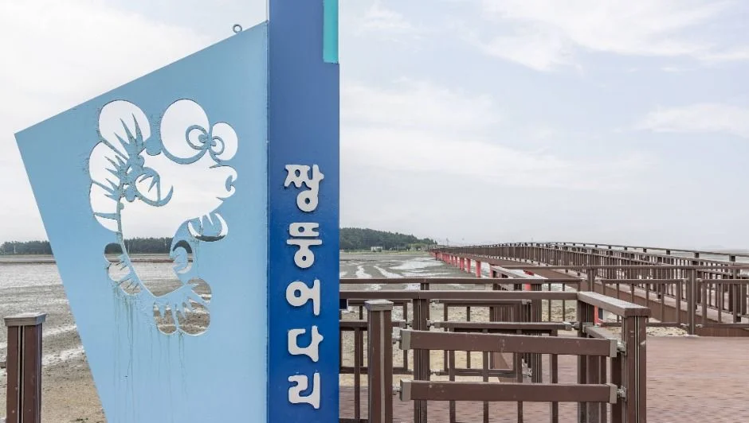
▲ 짱뚱어다리 입구의 짱뚱어 그림 표지. 촬영 시기는 자료에 없다. ⓒ 한국관광공사 · 공공누리 제1유형
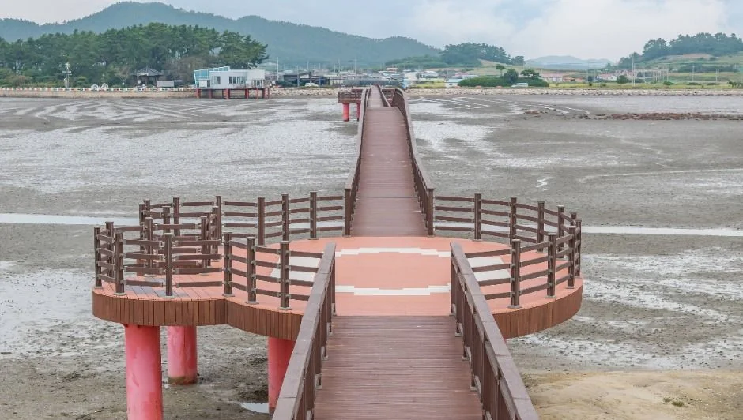
▲ 다리 중간의 원형 전망 데크. 촬영 시기는 자료에 없다. ⓒ 한국관광공사 · 공공누리 제1유형
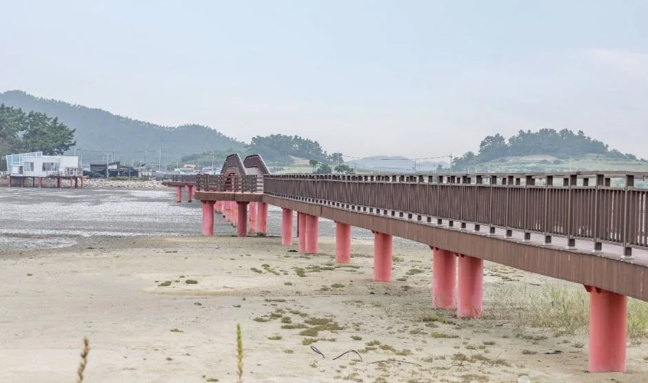
▲ 물이 빠진 갯벌 위로 이어진 짱뚱어다리 전경. 물때에 따라 다리 아래 모습이 달라진다. 촬영 시기는 자료에 없다. ⓒ 한국관광공사 · 공공누리 제1유형 · 하단 로고 크롭
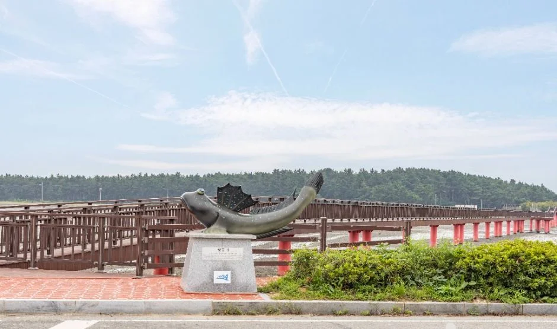
▲ 짱뚱어다리 입구의 짱뚱어 조형물. 촬영 시기는 자료에 없다. ⓒ 한국관광공사 · 공공누리 제1유형 · 하단 로고 크롭
6. 엘도라도리조트 인근 해변 — 우전과 짱뚱어는 같은 해변
엘도라도리조트 앞 해변은 우전해수욕장이다. 정책브리핑(2011)은 우전해수욕장과 짱뚱어해수욕장이 같은 해변이며 북쪽 일부에 짱뚱어해수욕장이라는 이름을 붙인 것이라고 설명했다. 여행 정보에서 두 이름이 따로 나와도 다른 해변으로 이해할 필요는 없다.
엘도라도리조트는 한국관광공사 정보상 객실 190실, 입실 15:00·퇴실 11:00이다. 오션스파랜드·야외수영장·해수테라피 같은 부대시설은 안내돼 있지만, 시설별 겨울 운영 여부와 요금은 확인하지 못했다. 숙박을 예약한다면 리조트(062-942-6300)에 직접 확인하자.
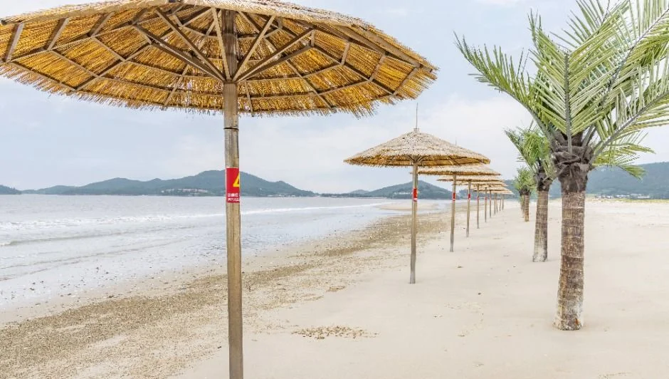
▲ 짱뚱어해수욕장의 파라솔이 늘어선 백사장. 이 사진은 여름 시설 상태로 보이며 겨울에는 달라질 수 있다. ⓒ 한국관광공사 · 공공누리 제1유형
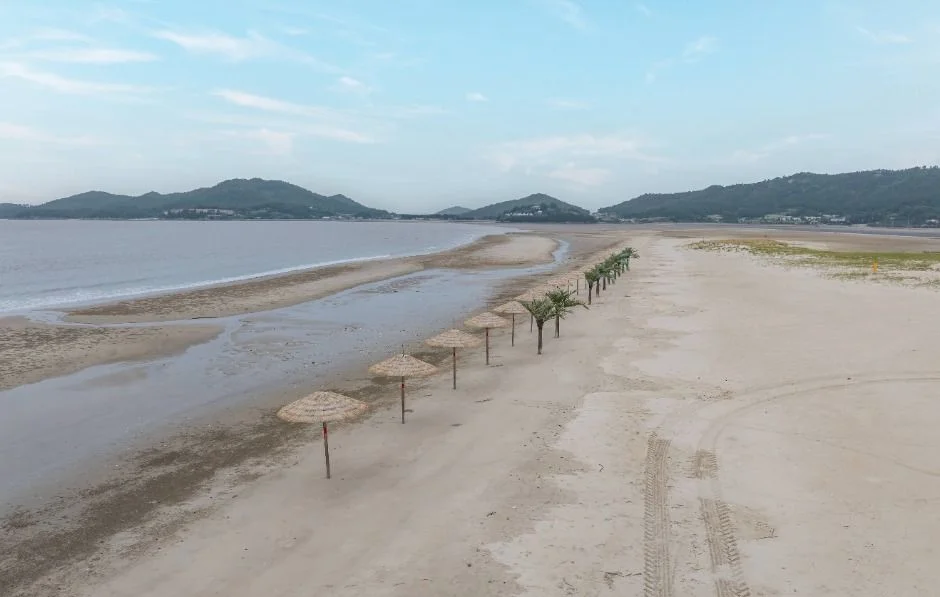
▲ 물이 빠진 짱뚱어해수욕장. 촬영 시기는 자료에 없다. ⓒ 한국관광공사 · 공공누리 제1유형
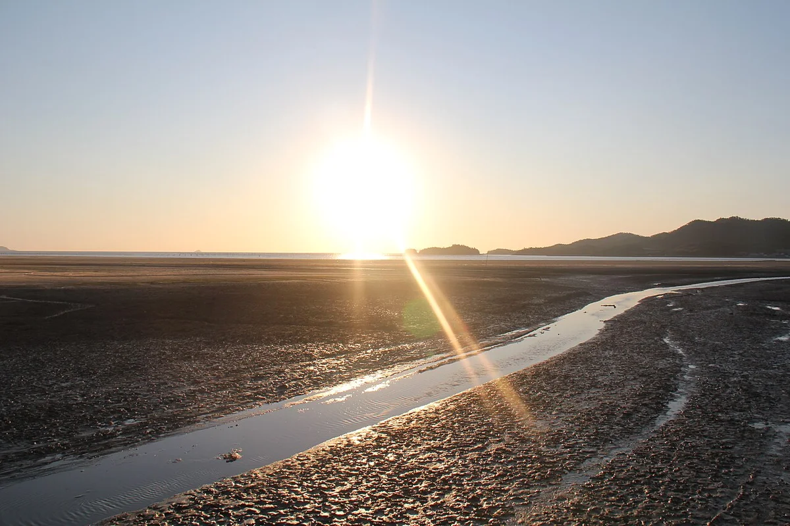
▲ 증도 일대 갯벌 위로 해가 기운 모습. 2011년 9월 22일 오후 촬영, 낙조 시각은 계절마다 다르다. ⓒ Korea.net / KOCIS · CC BY-SA 2.0 (Wikimedia Commons)
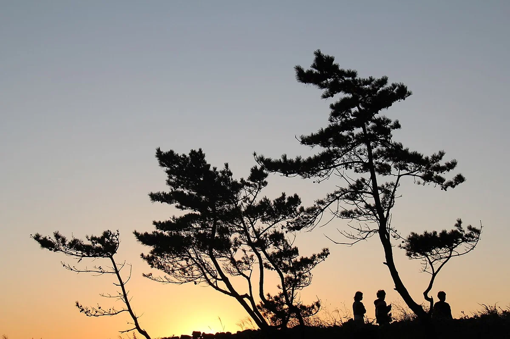
▲ 소나무 실루엣 너머의 노을. 2011년 9월 22일 촬영, 증도 일대 사진이며 정확한 지점은 자료에 없다. ⓒ Korea.net / KOCIS · CC BY-SA 2.0 (Wikimedia Commons)
▲ 전남 영광 염산면의 천일염전(태평염전이 아니다). 태평염전의 노을·겨울 사진은 공식 공개 자료에서 찾지 못해 다른 지역 염전 사진으로 해 질 녘 분위기를 대신한다. ⓒ 한국관광공사 · 공공누리 제1유형 · 하단 로고 크롭
⚠️ 겨울 해변 안전
겨울 갯벌에서는 물때와 바람을 반드시 확인한다. 갯벌 안쪽으로 걸어 들어가기 전에 밀물 시각을 확인하고, 해가 일찍 지는 점도 감안한다. 일몰·물때 수치는 이 글에서 따로 확인하지 못했으니 기상청과 한국천문연구원 자료를 이용하자.
7. 겨울에 가면 — 염전은 쉬고 박물관은 연다
이 기사의 태평염전 사진은 모두 2011년 9월 촬영분이고, 겨울 태평염전을 찍은 공공누리·Commons 사진은 찾지 못했다. 한국민족문화대백과사전은 우리나라 천일염 생산 기간을 4~10월로 설명한다. 겨울에는 염전 작업이 쉬는 시기라는 보도도 있다. 따라서 겨울에 가서 소금을 거두는 모습을 기대하기는 어렵다. 겨울 염전의 구체적인 풍경은 사진 자료가 없어 묘사하지 않는다.
| 항목 | 확인한 내용 | 근거 |
|---|---|---|
| 소금 생산 | 천일염 생산 기간은 4~10월로 설명됨 | 한국민족문화대백과사전 |
| 염전체험 | 3월 중순~10월 중순 운영이라 겨울에는 불가. 성인 15,000원, 청소년·어린이 13,500원, 3일 전 예약, 문의 061-275-0829 | 전남 천일염 안내 |
| 소금박물관 | 연중무휴, 09~18시(점심 12~13시) | 한국관광공사 |
| 짱뚱어다리 | 상시 개방·연중무휴 | 한국관광공사 |
| 태평염생식물원 | 상시 개방·연중무휴, 입장료 무료, 주차 가능, 탐방로 약 220m | 한국관광공사 정보(여행 안내 사이트 전재) |
염전체험 요금은 출처마다 다르다. 태평염전 기업 페이지에는 성인 18,000원 등 다른 금액이 적혀 있다. 이 글은 전남 천일염 안내의 표기를 따랐다.
같은 안내에는 만 4~7세 유치원생·65세 이상·장애인·국가유공자(증빙 필요) 12,000원, 체험 전 3일 이상 예약, 염전 상태나 비가 오면 체험이 취소될 수 있다는 내용도 있다. 소금박물관 입장료가 체험 요금에 포함되는지는 안내에 나오지 않아 확인하지 못했으니, 체험을 계획한다면 반드시 전화로 확인하자. 전남 천일염 태평염전 안내 바로가기
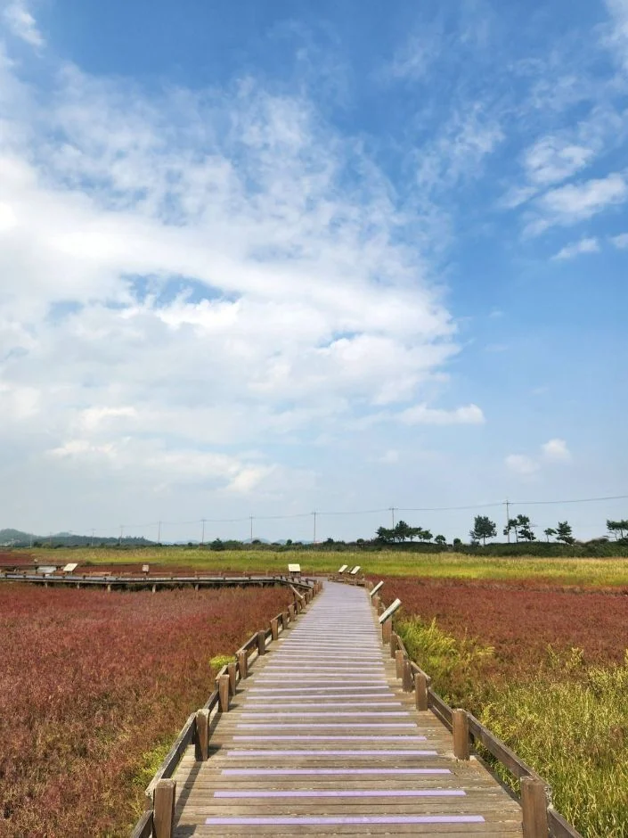
▲ 태평염생식물원의 데크 길. 풀이 붉게 든 시기의 사진이며 겨울 모습은 이와 다를 수 있다. 촬영 시기는 자료에 없다. ⓒ 한국관광공사 · 공공누리 제1유형
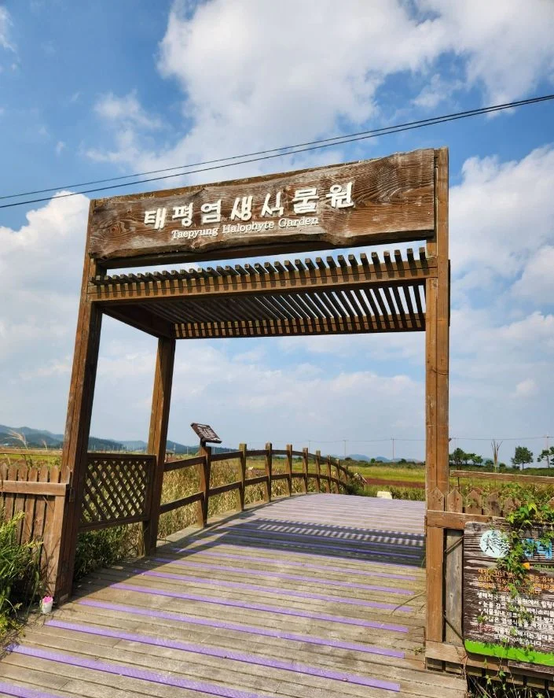
▲ 태평염생식물원 출입문과 데크 길. 촬영 시기는 자료에 없다. ⓒ 한국관광공사 · 공공누리 제1유형 · 하단 로고 크롭
염생식물원의 붉은 풍경은 가을 소재로 자주 소개된다. 같은 신안의 계절 꽃 소식은 신안 퍼플섬 기사에서 입장료와 주차를 확인할 수 있다.
8. 반나절 코스와 인근 연계
증도 안은 소금박물관, 태평염전, 짱뚱어다리가 한 섬 안에 모여 있어 반나절이면 핵심은 둘러볼 수 있다. 이동 시간은 공식 자료가 없어 적지 않는다. 아래는 확인된 운영시간만으로 짠 예시다.
| 순서 | 장소 | 체크 |
|---|---|---|
| 오전 | 소금박물관 (09:00 개관) | 점심시간 12~13시 전에 관람 |
| 점심 | 섬 안 식당 | 영업시간은 업소별 확인(공식 수치 확인 못함) |
| 오후 | 짱뚱어다리, 짱뚱어해수욕장 | 상시 개방, 물때 확인 |
| 선택 | 신안갯벌박물관 | 평일 09~17시, 주말 09~16:30, 매주 월요일 휴관, 무료, 문의 061-275-8400 |
순서는 소금박물관이 09:00에 열고 점심시간(12~13시)이 있다는 점, 짱뚱어다리가 상시 개방이라 물때에 맞춰 뒤로 돌릴 수 있다는 점에서 나왔다. 이동 시간은 공식 자료가 없어 표에 넣지 않았다.
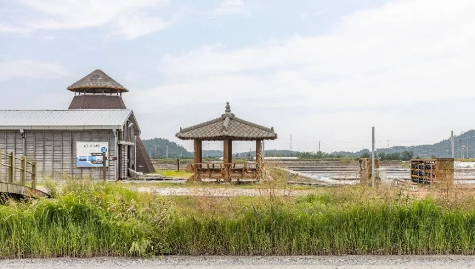
▲ 증도의 갯벌 곁 정자와 목조 건물. 한국관광공사 '증도(신안)' 항목 사진이며 촬영 시기는 자료에 없다. ⓒ 한국관광공사 · 공공누리 제1유형
다른 염전과 비교해 보고 싶다면 부안 곰소염전 기사를, 신안의 다른 섬 코스는 흑산도·홍도 기사를 참고하자.
✅ 출발 전 체크
1) 증도는 증도대교로 차가 들어가며 통행료는 공식 확인 못함 2) 소금박물관 09~18시(점심 12~13시), 성인 3,000원, 연중무휴 3) 염전체험은 3월 중순~10월 중순이라 겨울에는 불가 4) 짱뚱어다리는 상시 개방, 물때 확인 5) 우전해수욕장과 짱뚱어해수욕장은 같은 해변.
9. 정리
소금박물관은 09~18시(점심 12~13시), 연중무휴, 성인 3,000원이고, 짱뚱어다리는 상시 개방이며, 겨울에는 염전체험이 열리지 않는다. 증도대교는 2010년에 개통식을 연 길이 1.9km(교량 900m) 다리다. 엘도라도리조트 앞 우전해수욕장과 짱뚱어해수욕장은 같은 해변이다.
증도대교 통행료, 주차 요금과 대수, 태평염생식물원 입장료 공식 표기, 겨울 염전의 구체적 모습, 점심시간 관람 제한은 확인하지 못했다. 이 기사는 2026년 10월 21일 기준이므로 방문 전 소금박물관(061-275-0829)과 신안군에 확인하자.